PART 1 Module 7.1.1: Conceptual Models [FRBR, FRAD, FRSAD]
LIS 5043: Organization of Information
Dr. Manika Lamba
Introduction
Starting the Conversation
- What are FRBR, FRAD, FRSAD, and RDA and what do I need to know about each?
- A look “under the hood” FRBR/RDA and library catalogs/cataloging
- FRBR conceptual model and user tasks
- “FRBRized” systems
- Realistic/unrealistic expectations
- Challenges/Concerns about RDA and implementation
FRBR
- A report prepared by a study group of IFLA, the International Federation of Library Associations and Institutions, and published in 1998
- FRBR is a
conceptual model, and not a set of cataloging rules, a data format, nor a specific system design.- FRBR report enumerates
user tasks, - develops an
entity-relationship model, maps the user tasks to the entity attributes and relationships, andenumerates basic requirementsfor bibliographic records.
- FRBR report enumerates
FRBR: User Tasks
FRBR report, pp. 8–9
- using the data to
findmaterials that correspond to the user’s stated search criteria (e.g., in the context of a search for all documents on a given subject, or a search for a recording issued under a particular title) - using the data retrieved to
identifyan entity (e.g., to confirm that the document described in a record corresponds to the document sought by the user, or to distinguish between two texts or recordings that have the same title) - using the data to
selectan entity that is appropriate to the user’s needs (e.g., to select a text in a language the user understands, or to choose a version of a computer program that is compatible with the hardware and operating system available to the user) using the data in order toacquire or obtain accessto the entity described (e.g., to place a purchase order for a publication, to submit a request for the loan of a copy of a book in a library’s collection, or to access online an electronic document stored on a remote computer)
FRBR: Entity-Relationship Model
- Entities are divided into
three groupsin the FRBR model:Group 1, which contains entities that are “products of intellectual or artistic endeavor”Group 2, which contains entities that are potential creators, producers, or owners of Group 1 entitiesGroup 3, which could be called “other,” and contains entities that fall into the categories or concept, place, object, or event—entities that could be the subject of Group 1 entities but that are not considered to be either Group 1 or Group 2 entities
GROUP 1
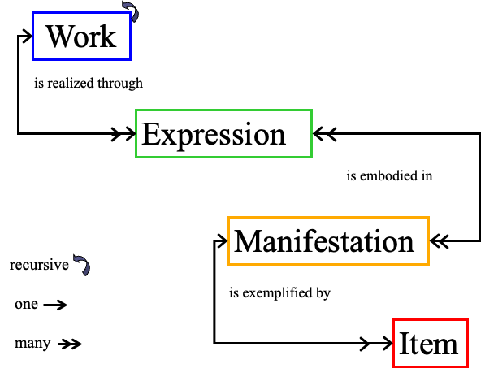FRBR’s Entity-Relationship Model
- Entites
- Relationships
- Attributes (data elements)
FRBR’s Entity-Relationship Model
FRBR Entities
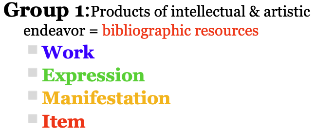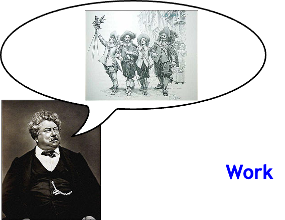
Elements to Describe Resources
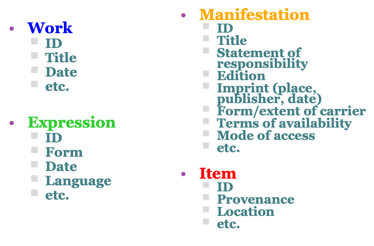Examples
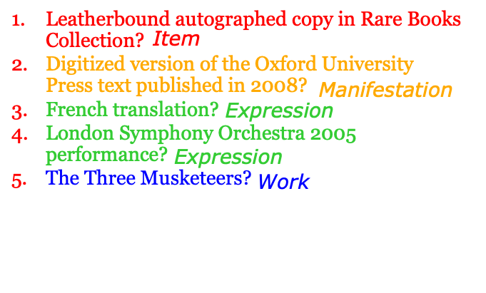Group 2
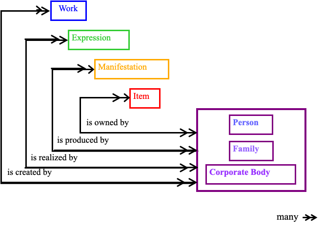FRBR Entities
Relationships vs. Element
FRBR Entities
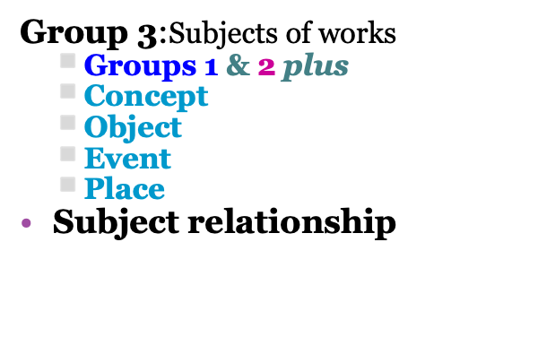FRAD
- Functional Requirements for
Authority Data - IFLA Division of Bibliographic Control working group 1999-2009
- December 2008 final text
- Approved March 2009
FRAD
- Functional Requirements for Authority Data
- User tasks:
Find: Find an entity or set of entities corresponding to stated criteriaIdentify: Identify an entityClarify (Justify): Document the authority record creator’s reason for choosing the name or form of name on which an access point is based.Contextualize (Understand): Place a person, corporate body, work, etc. in contextExample: WorldCat Identities: http://worldcat.org/identities/
FRAD Attributes
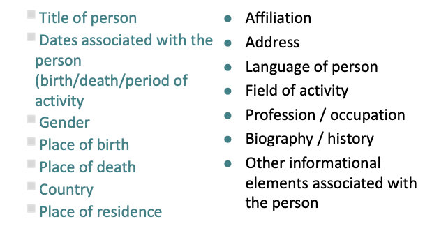FRAD Attributes
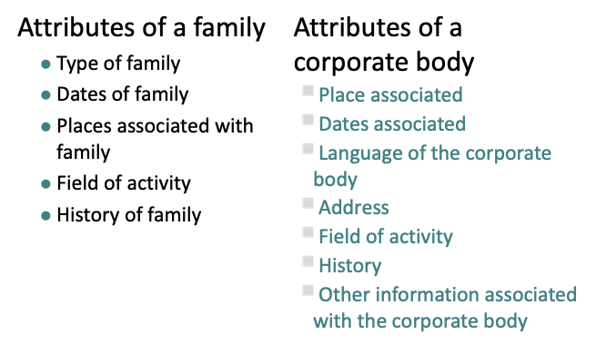Group 3 Entities (FRSAD)
Subject Relationship
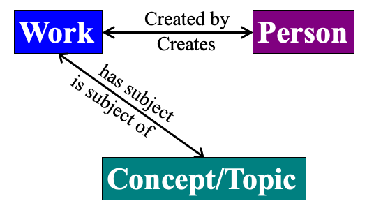Group 3
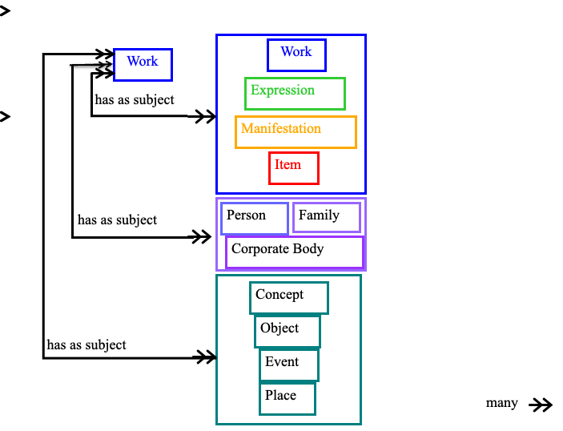